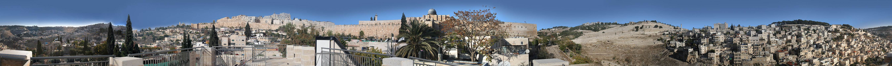
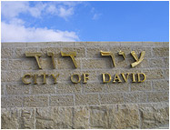

Панорама

Drag to explore the panoramic image

Introduction — Jerusalem, Mountains Surround Her
From the roof of the House of the Observer in the City of David, Jerusalem’s landscape unfolds as it has taken shape over many centuries. Looking more closely, the viewer can imagine the city’s ancient surroundings, as David described them in Tehillim: “As the mountains surround Jerusalem, so Hashem surrounds His people, from now and forever” (Psalms 125:2).